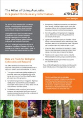
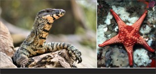

Publications

{kind=link}
ALA Fact Sheet
Fact Sheets
- Atlas of Living Australia Fact Sheet (July 2011) - PDF (2.6MB)
- The Atlas of Living Australia and the Great Eastern Ranges Initiative - a Collaborative Project (June 2011) - PDF (197 KB)
- ALA MorphBank Fact Sheet (November 2010) - PDF (492 KB)
Documents
- The ALA Data Provider Agreement – PDF (165KB) documents a data providers rights and responsibilities and their choice of conditions (license) for sharing their data via the ALA. For further information on data sharing via the ALA, please contact the ALA data team at ALA_Data@csiro.au.
Reports / Papers
- Belbin, Lee, 2011. The Atlas of Living Australia’s Spatial Portal. In, M.B. Jones and C. Gries (eds.), Proceedings of the Environmental Information Management Conference 2011 (EIM2011), 39-43. University of California, doi:10.5060/D2NC5Z4X – PDF (618KB)
- ALA report to partners, October 2011 – PDF (2.7MB)
- Citizen Science focus group report V03, (B Wettle, 13 May 2010) – PDF (1.3MB)
- Environmental Data Library Workshop, (P Flemons & L Belbin, 22-23 April 2010) – PDF (715KB)
- ALA Spatial Analysis Tools Workshop Report, (P Flemons et al., 3-4 December 2009) - PDF (1.2MB)
- Our secrets are not your secrets – sensitive data report and proposed policy , (J Tann & P Flemons, October 2009) – PDF (615KB)
- ALA User Needs Analysis report, (J Tann et al., November 2008) – PDF (2.08MB)
- Review of online and desktop tools for the ALA, (J Tann & P Flemons, February 2008) - PDF (6.8MB)
Business Plans
- NCRIS FundingAgreement
- ALA NCRIS Business Plan 2010-11
- Atlas Participation Agreement
- ALA EIF Super Science Business Plan 2010-11
- Management Committee - Terms of Reference
- ALA 2007-2008 Business Plan
- ALA 2008-2009 Business Plan
- ALA 2009-2010 Business Plan
Related Reports
- GBIF. 2010. ‘State-of-the-Network 2010: Discovery and Publishing of the Primary Biodiversity Data through the GBIF Network’ by Chavan, V. S., Gaiji, S., Hahn, A., Sood, R. K., Raymond, M., and N. King. (Global Biodiversity Information Facility) - PDF (1.3 MB)
- GBIF. 2010. ‘Best practice guide for ‘Data Discovery and Publishing Strategy and Action Plans’ by Chavan, V. S., Sood, R. K., and A. H. Arino. (Global Biodiversity Information Facility) - PDF (803 KB)
- GBIF ‘Global Strategy and Action Plan for mobilisation of Natural History Collections data’ (GSAP-NHC)’. Eight articles in a special issue of the Journal of Biodiversity Informatics, 7, 2010, pp.67 – 71, available at https://journals.ku.edu/index.php/jbi.
Posters
- The Atlas of Living Australia - A0 introductory poster (2009) – PDF (1.53MB)
- The Atlas of Living Australia - A0 eBiosphere poster (Jun-09) – PDF (2.8MB)
- The Atlas of Living Australia - A4 flyer - web quality (2009) – PDF (992KB), print quality – PDF (3.21MB)

ALA Goanna & Starfish Postcard
Postcards
- Goanna & Starfish – Low res – PDF (160KB)
- Frog & Sundew – Low res – PDF (131KB)
- Rosella & Bees – Low res – PDF (143KB)
- Echidna & Grevillea – Low res – PDF (156KB)
Governance Documents
ALA Management Committee (MC)
Governance Framework - MC (PDF 275 kB)
Terms of Reference - MC (PDF 184 kB)
Committee Members - MC (PDF 124 kB)
Project Steering Committee (PSC)
Governance Framework - PSC (PDF 380 KB)
Terms of Reference - PSC (PDF 218 kB)
Committee Members - PSC (PDF 120 kB)
Integrated Biological Systems Steering Committee (IBSSC)
Governance Framework - IBSSC (PDF 130 kB)
Terms of Reference - IBSSC (PDF 150 kB)
Committee Members - IBSSC (PDF 130 kB)
Other Committees
Technical Steering Group (PDF 111 kB)
Past Committee Membership (PDF 109 kB)
Governance Diagrams
Management and Steering Committee roles (PDF 310 kB)
IBS & NCRIS capabilities (PDF 342 kB)